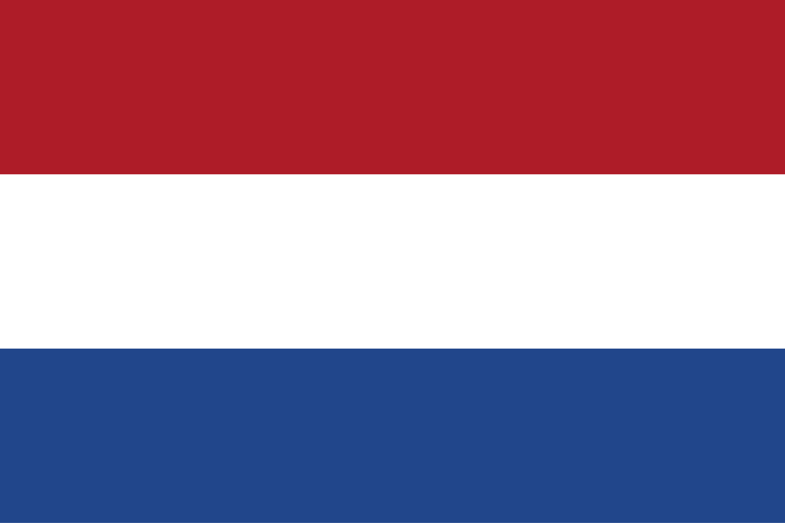

Our school, located in the Benoordenhout district of The Hague, offers
classes in the following martial arts:
Our school, located in the Benoordenhout district of The Hague, offers
classes in the following martial arts:
- Judo for children from 3 years and adults
- Jiu-jitsu for children from 7 years old and adults
- Karatefor children from 7 years and adults
- Aikibudo (a form of aikido) from 15 years onwards.
Lessons are in Dutch, but we are used to translate into English for
those who need it. If you are interested in coming to work out with us
or if your child is interested, please fill in this form without
obligation.
To enrol
 Onze
school, gevestigd in de wijk Benoordenhout in Den Haag, biedt lessen in
de volgende vechtsporten:
- Judo voor kinderen vanaf 3 jaar en volwassenen
- Jiujitsu voor kinderen vanaf 7 jaar en volwassenen
- Karate voor kinderen vanaf 7 jaar en volwassenen
- Aikido (een vorm van aikido) vanaf 15 jaar
Als u interesse heeft
om bij ons te komen sporten of als uw kind geïnteresseerd is, vul dan
geheel vrijblijvend ditformulier in.
Inschrijven
 Notre école, située dans le quartier Benoordenhout de La Haye, propose
des cours dans les arts martiaux suivants :
Notre école, située dans le quartier Benoordenhout de La Haye, propose
des cours dans les arts martiaux suivants :
- Judo pour enfants à partir de 3 ans et adultes
- Jiu-jitsu pour enfants à partir de 7 ans et adultes
- karaté pour enfants à partir de 7 ans et adultes
- l'Aïkibudo (une forme d'aïkido) à partir de 15 ans
Les cours sont en néerlandais, mais nous avons quelques cours qui sont
dispensés en français, appuyez sur ce lien. Si vous êtes intéressé à
venir vous entraîner avec nous ou si votre enfant est intéressé,
veuillez remplir ce formulaire sans engagement.
s'inscrire